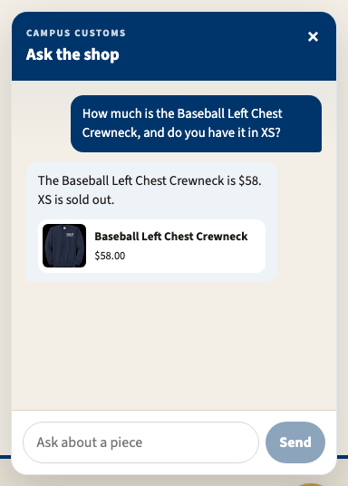
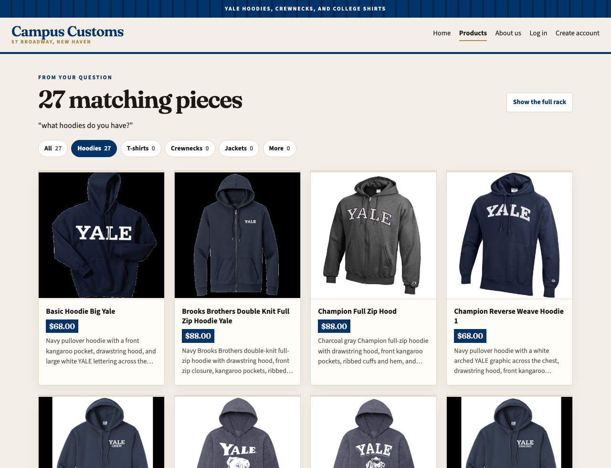
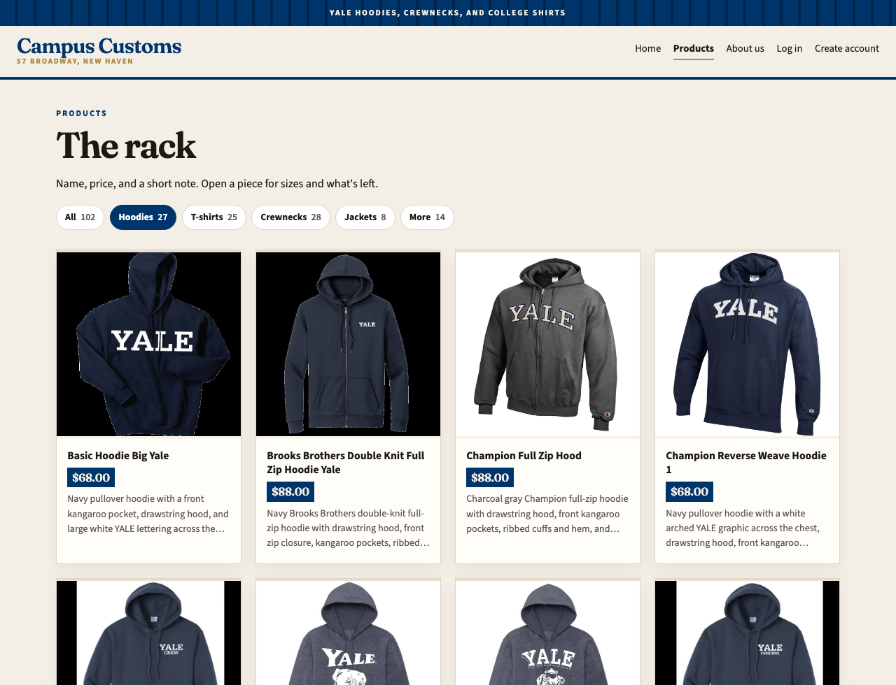

Campus Customs app check
Three checks from the live shop. Each heading is one test, then the screenshot, then what it shows.
1. Chat checks inventory from the database
Asked “How much is the Baseball Left Chest Crewneck, and do you have it in XS?” The reply says the crewneck is $58 and XS is sold out, and the card under it shows the same $58.00. That price and the sold-out size match the inventory table, so the assistant is reading stock and price from the database.

2. A category question puts matching cards on the page
After “what hoodies do you have?” the products page switches to “27 matching pieces” and quotes that question. The cards below are the matching hoodies, each with a photo, name, price, and short description, instead of the full rack.

3. Rack filters from the usability work
On the full rack, the Hoodies filter is selected and labeled 27, while T-shirts, crewnecks, jackets, and the rest still show their own counts. The grid under “The rack” is only hoodies, so a shopper can narrow the catalogue without opening the chat.
